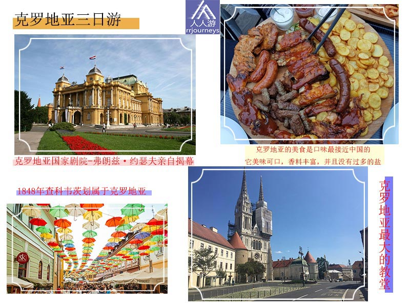
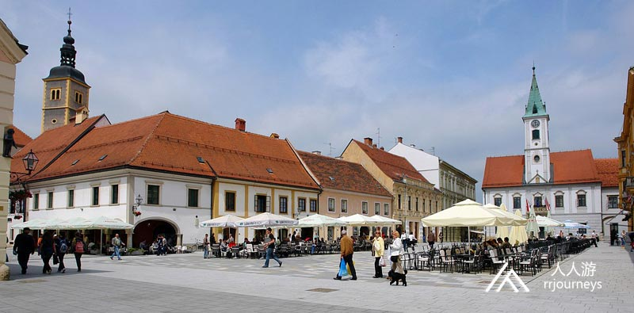
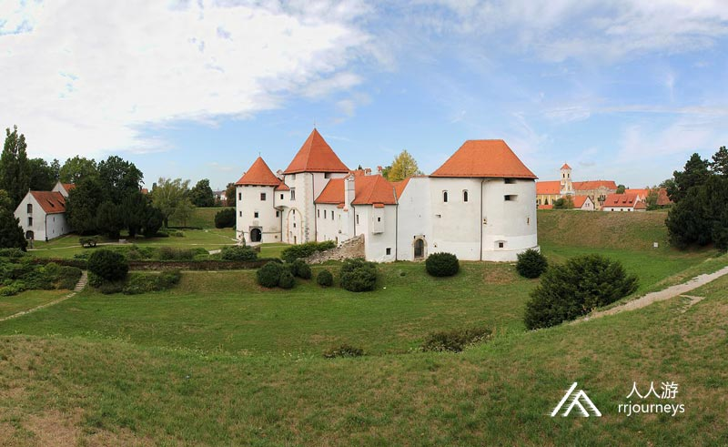
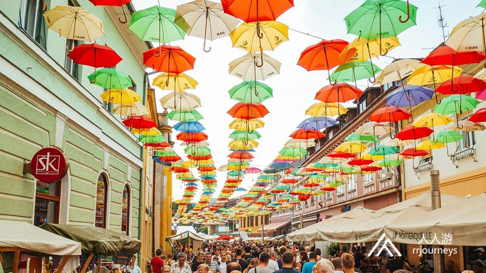

特色旅游
1日游
2-4日游
5-10日游
精品长线旅游
地址：匈牙利 布达佩斯 Budapest-Keleti, 1087
电话：0036-30-9574162
邮件：rrjourneys@gmail.com
网站：http://www.rrjourneys.com
【美景】
千年历史的巴洛克城市-瓦拉日丁
克罗地亚的首都，世界唯一“失恋博物馆”的所在地-萨格勒布
克罗地亚小众旅游地，精美而神秘-查科韦茨

【美食】
土豆炖牛肉 海鲜墨鱼饭 姜饼 Pasticada Soparnik kremsnite 烤肉大拼盘 烤排骨 美味海鲜杂烩（时令）
具体行程
DAY 1：布达佩斯—瓦拉日丁-萨格勒布
入住地点：萨格勒布
瓦拉日丁
瓦拉日丁位于萨格勒布北部，距离萨格勒布81公里，总人口为46,946。它主要以其巴洛克式建筑，音乐， 纺织，食品和IT行业而闻名。它的历史可追溯到1181年8月20日国王贝拉三世在法律文件中的温泉记载。匈牙利国王安德鲁二世于1209 年宣布瓦拉日丁为自由的皇家行政区。1523年马格雷夫• 格奥尔建造了巴洛克风格的市政厅。市政厅塔楼的下方设有瓦拉日丁徽章。每周六在此的警卫换岗仪式和警察的自行车巡逻已成为城市一景。 自1971年以来巴洛克音乐节每年在此举行，吸引了许多来自世界各地最优秀的音乐家们和他们的粉丝。另外“街头步行节”的艺术也深受艺术家，街头表演者，音乐家和小贩们的喜欢和参与。 瓦拉日丁的克罗地亚国家剧院是巴洛克和洛可可式建筑的典型代表，建于1873年，由维也纳建筑师赫尔曼•赫尔默和费迪南德•费尔纳设计。  景点：瓦拉日丁城堡 瓦拉日丁城堡位于克罗地亚西北部，是16世纪历史上军事边界内抵抗奥斯曼帝国的主要防御堡垒之一。在此期间，城堡被扩建为现代堡垒，周围有护城河，土墙和堡垒。城堡在以后的几年里被多次重建。  景点：瓦拉日丁大教堂 瓦拉日丁大教堂建于1647年，前身为耶稣会教堂，并以巴洛克式入口，十八世纪祭坛和绘画而著称。大教堂的主教是尼古拉。大教堂是最美丽的巴洛克式教堂，也是瓦拉日丁市的守护神。 景点：城市中心广场
瓦拉日丁的老城中心是市内最热闹的区域，建有市政厅、教堂、广场、贵族府邸（多建于瓦拉日丁18世纪最兴盛的时候）以及数不清的餐厅与咖啡厅。 城市中心广场的宫殿多建于17世纪下半叶至19世纪初。广场上的德拉科夫斯基伯爵宫是典型的巴洛克时期的贵族宫殿，主教的宫殿在广场的另一侧。但都在19世纪末被拆除。广场的中央建筑物是市政厅，始建于15世纪，1791年进行了翻新。著名的帕塔奇宫位于方济各会广场。它是两层楼，有角湾窗，尽管尺寸很小，但外观却非常豪华，带有岩石图案。广场的北侧，有建于1785年的瓦萨曼• 克罗伊茨宫和1791年建的赫泽尔宫，均为古典主义风格。赫泽尔宫的建造者是中了彩票的城市邮递员弗兰霍•赫泽尔。萨格勒布•卡普托尔于1960年建造的宫殿是借用上帝的眼睛装饰在山墙上，因此引人注目。
DAY 2：萨格勒布
萨格勒布 萨格勒布是克罗地亚共和国的首都和人口最多的城市，超过一百万的居民，面积641平方公里。萨格勒布有史书记载可以追溯到1094年。它遗留了丰富的古迹和建筑。萨格勒布曾经的两个居住点成了今天这座城市的历史中心。由于萨格勒布的特殊的地理位置，使其成为中欧和亚得里亚海地区之间的桥梁。萨格勒布是克罗地亚最大的交通中心，一个历史悠久的工业发达的，拥有科研机构的，经济最发达的城市。 景点：圣马可广场 (萨格勒布)及圣马尔谷教堂 圣马克广场是萨格勒布上城区的中央广场，前身为拉迪奇广场。圣马克广场上的马可是国家最高机构的所在地： 克罗地亚议会，克罗地亚共和国政府和宪法法院。该广场于2006年进行了翻修。从1992年到2015年间，所有的共和国总统都在广场上宣誓就职。 圣马尔谷教堂是该市最古老的建筑之一，位于克罗地亚首都圣马可广场，为罗马式建筑。14世纪礼拜堂和拱顶改为哥特式建筑，教堂屋顶上绘有克罗地亚王国和扎格瑞布的徽章。 圣马尔谷教堂独特的彩色-瓷砖屋顶，使其成为萨格勒布一道“最靓的风景线”，绝对是萨格勒布的标志。
景点：失恋博物馆
到萨格勒布来一定要到失恋博物馆放肆一次。与其说这是一个博物馆，不如说这是爱情记忆的存储站。
该失恋博物馆曾获得博物馆界最高荣誉——“欧洲最有创意的博物馆”。
萨格勒布大教堂又称圣母玛利亚和圣斯蒂芬和拉迪斯拉夫的圣母升天大教堂 ，是克罗地亚最大的古建筑，也是克罗地亚文化遗产最有价值的古迹之一。它是克罗地亚的第一座也是最重要的哥特式建筑。教堂的塔楼拆除之前，它的高度为105米，但现在只有92米。 萨格勒布教区由国王拉迪斯拉夫于 1094年建立，同年根据克罗地亚的传统，建立了一座大教堂。
DAY 3：萨格勒布—查科韦茨
返回布达佩斯
查科韦茨
查科韦茨是克罗地亚北部的一个小镇，位于穆拉河与德拉瓦河之间，以其葡萄园，农业和狩猎场而闻名。 根据2011年的人口普查，该市定居点有27,820名居民，主要是克罗地亚人和罗马天主教徒，最大的少数民族是罗姆人，塞族人和斯洛文尼亚人。 小镇的名字来自伯爵的名字。他在13世纪初期建造了一个木制堡垒，后来称为查科塔。查科韦茨经济和文化的显著增长始于1547 年3月15日。当时该地区的所有者是尼古拉。他拥有的城堡装饰精美，周围环绕着公园和著名军事领袖和统治者的雕塑。 1579 年5月29日被定为城市日。因为兹林斯基于此日授予查科韦茨及周围居民区的居民特权，使查科韦茨的经济转变为自由市场。18世纪末，镇的主人费斯特蒂奇在此镇开创和发展了手工业及贸易。1848年班• 乔西普•耶拉希奇从匈牙利人手中解放了查科韦茨 ，并将其划属于克罗地亚。 查科韦茨的文化活动丰富，越来越多的游客定期来此度假，庆祝5月29日的城市日和查科韦茨文化节。
查科韦茨中心坐落着城市象征的斯塔里堡垒。许多世纪以来，堡垒的主人还是查科韦茨镇的主人。这座堡垒最初是中世纪为欧内斯特家族建造的，在查科韦茨的历史和遗产中留下了最重要的印记。16世纪，堡垒的中心被改成文艺复兴时期的宫殿。这座宫殿名为“新宫殿”，于1743年左右进行了大范围的翻新，时至今日仍是巴洛克风格。它被认为是克罗地亚最大最重要的巴洛克式古迹之一。同时又建造了一座巴洛克式的塔楼。即使今天查科韦茨的轮廓也清晰可辨。

Croatia: Where Your Mediterranean Fantasies Turn into Reality
Croatia is a country of dramatic mountainous landscapes and dreamy deep-blue seascapes. Croatia's extraordinary island-speckled coastline is indisputably its main attraction. The first thing that strikes you is the remarkable clarity of the water. Shift your gaze for just a moment from the glittering waters and chances are an almighty mountain will loom into view. The Dinaric Range, which stretches all the way from Italy to Albania, hugs much of the coast. The limestone karst has bequeathed a wonderland of craggy peaks, caverns, river canyons, waterfalls and ridiculously picturesque lakes. Head further inland and things flatten out again into rolling farmland. But don’t only feast your eyes on this… Croatian wines and olive oils are making their mark on the world stage, garnering top awards.
时间
地点
景点（可以 +/- ）
入住地点
第一天
布达佩斯出发
275公里
Varaždin
克罗地亚
Old Town Varaždin, 特拉科什恰恩城堡, Varazdin Cathedral, Saint Nicholas, bishop, seoski turizam "Grešna pilnica”
萨格勒布
Zagreb
第二天
88公里
札格瑞布大教堂, 植物园, 马克西米公园, 警示塔, 失恋博物馆, 圣马尔谷教堂, 米马拉博物馆
第三天
103公里
260公里到布达佩斯
查科韦茨 (Čakovec)
查科韦茨城堡, Park Zrinski Park Zrinski Cakovec, Trgovački kasino, Church of St.. Bishop Nicholas, 费斯特蒂奇城堡
-
6天5夜乌克兰小众深度游
7天6夜克罗地亚、波黑小众
5天4夜波兰、斯洛伐克小众
四天三夜奥地利、斯洛文尼亚
匈牙利最大的滑雪场一日游
6天5夜，奥地利滑雪自由行
7天6夜，奥地利旅游滑雪自
4天3夜，奥地利滑雪自由行
Copyright 2020 www.rrjourneys.com
人人游 旅游官方网站 版权所有 All Rights Reserved